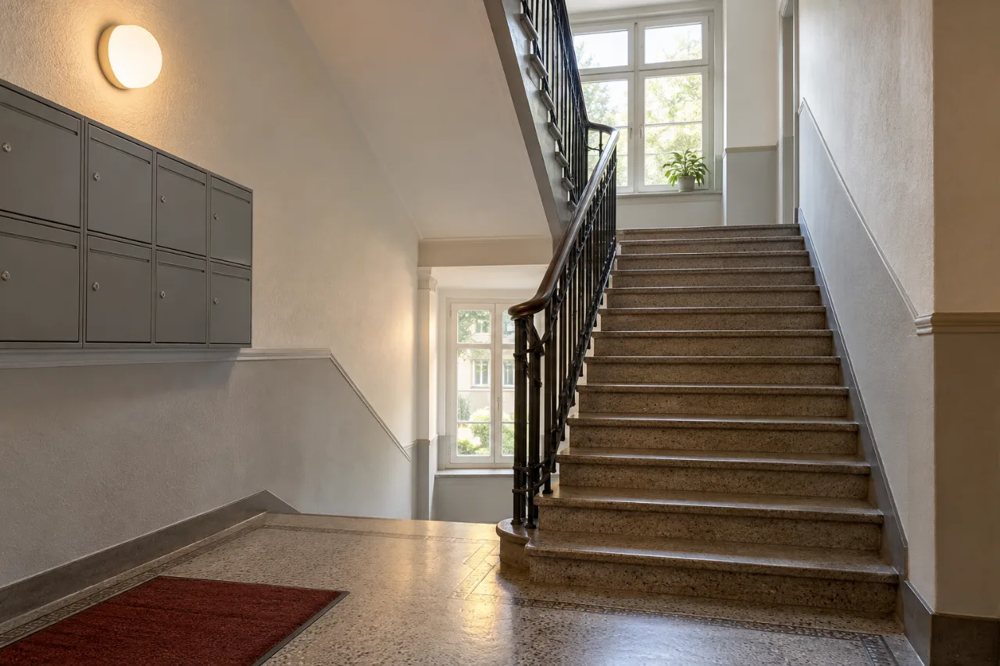

Leistung 03
Hausmeisterservice in Stuttgart
Jemand, der regelmäßig nach dem Objekt sieht, kleinere Arbeiten gleich erledigt und sich meldet, bevor aus einem kleinen Schaden ein großer wird.

Für wen
Wenn Sie nicht selbst vor Ort sein können
Vermieter, Hausverwaltungen und Eigentümergemeinschaften haben selten jemanden im Haus, der sich kümmert. Wir übernehmen das – regelmäßig nach Plan oder bei Bedarf.
Sie bekommen einen festen Ansprechpartner, der das Objekt kennt. Was über kleinere Arbeiten hinausgeht, stimmen wir vorher mit Ihnen ab.

Pflegeplan
Was regelmäßig dazugehört
Ein Beispiel, wie ein Betreuungsplan aussehen kann. Takt und Umfang legen wir gemeinsam fest – passend zu Objekt und Budget.
- Bei jedem Rundgang
Kontrolle
- Eingang, Treppenhaus und Beleuchtung
- Technik- und Kellerräume (Sichtkontrolle)
- Kurzes Protokoll an Sie
- Laufend
Kleinere Arbeiten
- Kleinere Instandhaltung und Reparaturen
- Leuchtmittel tauschen – ohne Eingriff in die Elektroinstallation
- Einfache Montagen: Schilder, Briefkästen, Handläufe
- Saisonal
Außenanlagen
- Pflege von Allgemein- und Außenflächen
- Kontrolle nach Sturm oder Starkregen
- Bei Bedarf
Koordination
- Erster Ansprechpartner bei Schäden
- Fachbetriebe abstimmen und begleiten
Ein Rundgang im Beispiel
Vom Eingang bis zu den Außenanlagen: Die Nummern zeigen eine mögliche Reihenfolge. Was auffällt, steht danach im Protokoll.
- Eingang und Briefkästen
- Treppenhaus und Beleuchtung
- Technik- und Kellerraum (Sichtkontrolle)
- Müllplatz
- Außenanlagen
Offener Punkt
[FREIGABE ERFORDERLICH: Umfang bestätigen – insbesondere Winterdienst, Grünpflege und Reinigung von Allgemeinflächen.]
Mieterwechsel
Zwischen zwei Mietverhältnissen
Zwischen Auszug und Einzug ist meist wenig Zeit. Wir helfen, die Wohnung so vorzubereiten, dass die neuen Mieter einziehen können.
- Rundgang nach dem Auszug und Liste der offenen Punkte
- Ausbesserung von Wänden, Decken und Trockenbauflächen
- Kleinere Reparaturen und Montagen
- Abstimmung mit Fachbetrieben, wenn mehr anfällt
- Rückmeldung an Sie, wenn die Wohnung bereit ist
Vorbereitung
Was wir für eine Anfrage brauchen
- Art und Größe des Objekts
- Einmalig oder regelmäßig – und wenn regelmäßig, wie oft?
- Welche Aufgaben übernommen werden sollen
- Wer Ansprechpartner für Mieter und Eigentümer ist
Was ein Fachbetrieb übernimmt
- Arbeiten an Elektro-, Gas- und Wasserinstallationen
- Wartung von Heizungsanlagen
- Prüfungen mit gesetzlicher Nachweispflicht
Wenn solche Arbeiten anfallen, stellen wir den Kontakt her oder stimmen sie mit einem Partnerbetrieb ab.
Einsatzgebiet
Hausmeisterservice in Stuttgart und Umgebung
Wir betreuen Wohn- und Gewerbeobjekte in Stuttgart und im Umkreis von etwa 30 Kilometern – regelmäßig nach Plan oder bei Bedarf.
- Stuttgart
- Esslingen
- Ludwigsburg
- Böblingen
- Sindelfingen
- Leonberg
- Fellbach
- Waiblingen
- Filderstadt
Fragen
Häufig gefragt
Welche Arbeiten führen Sie selbst aus – und welche Partnerbetriebe?
Trockenbau, Hausmeisterservice und die üblichen Reparatur- und Instandhaltungsarbeiten übernehmen wir selbst. Für Gewerke außerhalb unseres Leistungsumfangs arbeiten wir mit Fachbetrieben aus unserem Netzwerk zusammen. Bevor ein Partner beteiligt wird, erfahren Sie, wer es ist und in welcher Form er tätig wird.
Kann ich die Kosten steuerlich geltend machen?
Für Handwerkerleistungen im eigenen Haushalt können Privatpersonen nach § 35a Einkommensteuergesetz 20 Prozent der Arbeitskosten, höchstens 1.200 Euro im Jahr, direkt von der Steuer abziehen. Voraussetzung sind eine Rechnung und eine Zahlung per Überweisung. Den Lohnanteil weisen wir auf der Rechnung gesondert aus. Ob die Voraussetzungen in Ihrem Fall vorliegen, klären Sie bitte mit Ihrer Steuerberatung.
Arbeiten Sie auch für Hausverwaltungen und Gewerbebetriebe?
Ja. Neben Privatkunden betreuen wir Vermieter, Hausverwaltungen, Eigentümergemeinschaften und kleinere Gewerbebetriebe – einmalig oder regelmäßig.
Übernehmen Sie auch Elektro-, Gas- oder Wasserinstallationen?
Nein, nicht selbst. Arbeiten an Elektro-, Gas- und Wasserinstallationen sind eingetragenen Fachbetrieben vorbehalten. Wenn solche Arbeiten anfallen, stellen wir den Kontakt zu einem Partnerbetrieb her oder stimmen die Arbeiten mit ihm ab.
Hausmeisterservice
Beschreiben Sie Ihr Objekt.
Art, Größe, gewünschter Takt – wir schlagen Ihnen einen passenden Betreuungsumfang vor.